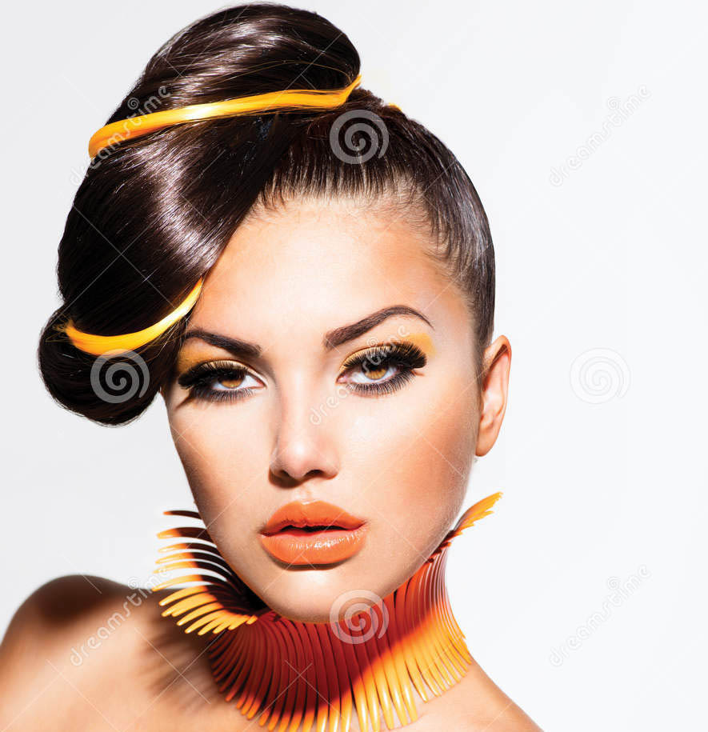

<ion-view>
  <ion-nav-title>{{ dashTitle }}</ion-nav-title>

  <div class="tabs">
    <a class="tab-item" ng-click="search({'sort': 'newest'}, 'Newest Videos')">
      Newest
    </a>
    <a class="tab-item" ng-click="search({'live': true}, 'Live Streams')">
      Live
    </a>     
    <a class="tab-item" ng-click="search({}, 'Recommended Videos')">
      Favorites
    </a>
  </div>

  <ion-content class="padding">

    <!--div class="list card" ng-repeat="video in videos" ng-click="goVideoDetail(video)">
      <div class="item item-divider">{{ video.title }}</div>
      <div class="item item-body">
        
      </div>
    </div>
    <br-->

    <!-- @vimal, needs wiring -->
    <div class="list card" ng-repeat="video in videos" ui-sref="tab.video-detail({videoId: video.recordingId})">
      <div class="item item-body video-item">
        <div class="list">
          <div class="leading">
            <a class="item item-thumbnail-left" href="#">
              
              <h2 class="username">Username</h2>
              <p class="title">Video Title</p>
              <p class="tag">#Tag #Tag #Tag</p>
            </a>
          </div>
      </div>
    </div>
    <br>


  </ion-content>

</ion-view>
